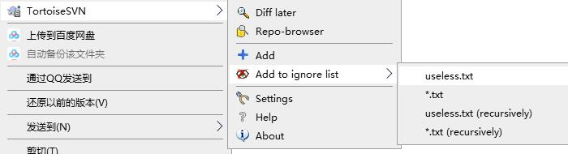
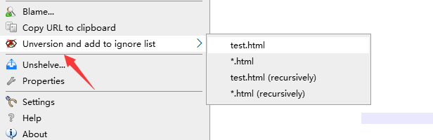
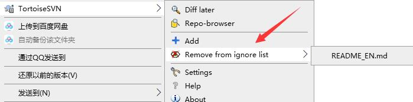

svn忽略教程
工作中，通常会有一些文件是不需要提交的，比如前端开发经常遇到的node_modules目录，以及一些build过程生成的临时文件。
添加忽略可以减少不必要的提交，节省提交和更新时间，还可以节省 SVN 服务端的空间占用。
如果你不想看文字教程，你还可以看 SVN添加忽略视频教程
1. 添加忽略
假设我们现在需要忽略掉useless.txt这个文件，使用TortoiseSVN非常方便。
选中要忽略的文件，右键菜单选择Add to ignore list：

注意，如果你需要精确忽略这个文件，选择useless.txt
选择*.txt将忽略项目中所有这个后缀的文件。
除了在目录中右键选择文件进行忽略，我们还可以在提交窗口直接进行文件忽略：
当你添加忽略后，被忽略的文件就会从提交窗口消失
另外，你会发现，当前文件的父目录会有一个属性修改的变动，我们需要把这个变动提交到上去，这样其他协作者也同步了这个忽略。
如果你双击查看diff，你会发现，其实他里面就是记录了我们刚忽略的文件名字。
以上是文件的忽略，目录的忽略操作步骤是一样的，不一样的是，忽略目录后，他会把目录下的所有文件都忽略。
另外，你可能发现了，忽略选项里有些是加了(recursively)的，这个表示递归忽略，这样子目录也会忽略
2. 忽略已提交过的文件
上面我们忽略的文件都是还未提交过的新文件，如果是已经提交到服务器的文件，添加忽略时稍微有点不一样，这时候提示多了Unversion，这表示取消版本管理并且添加到忽略列表。

上面我们把test.html文件取消了版本管理并且添加到忽略列表了，这时候的提交变动我们看下：
会发现多了一个删除test.html的提交，这表示从版本库中删除这个文件，我们需要把这个变动提交上去，这样其他协作者也会把这个文件取消版本管理
3. 取消忽略
如果你需要取消忽略，操作跟添加忽略时一样，再操作一次就行了，只是提示语变成了 Remove from …

4. 添加全局忽略
假设有些文件我们是需要所有项目都进行忽略的，我们可以添加全局忽略。
非常简单，右键–>TortoiseSVN–>Settings，打开SVN的设置页面，填写需要忽略的内容
你会发现，它默认就已经添加了很多文件的忽略，你可以往里面添加更多需要忽略的文件，也可以删除不需要忽略的，对全部项目生效。
更多阅读：SVN 命令行添加忽略